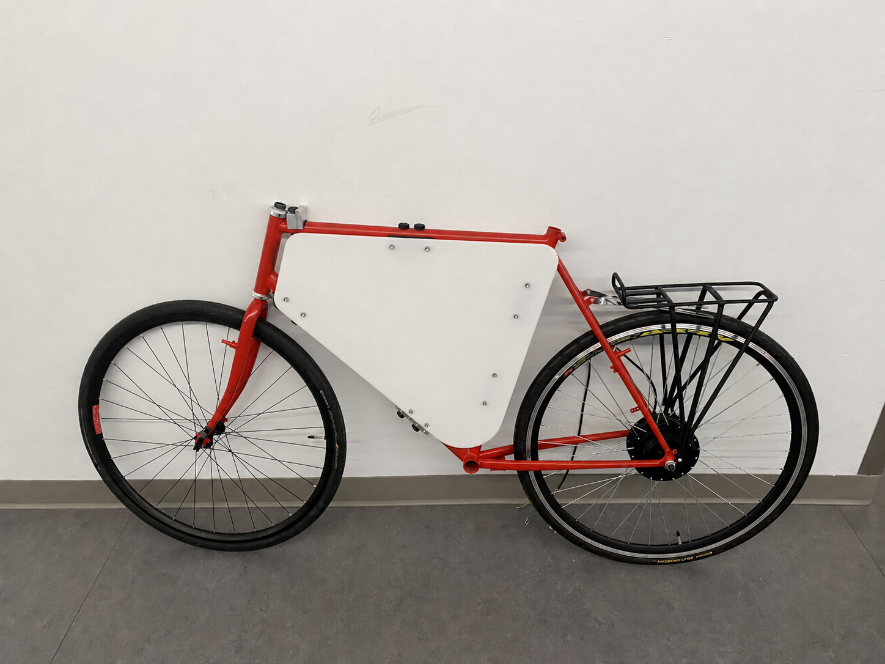
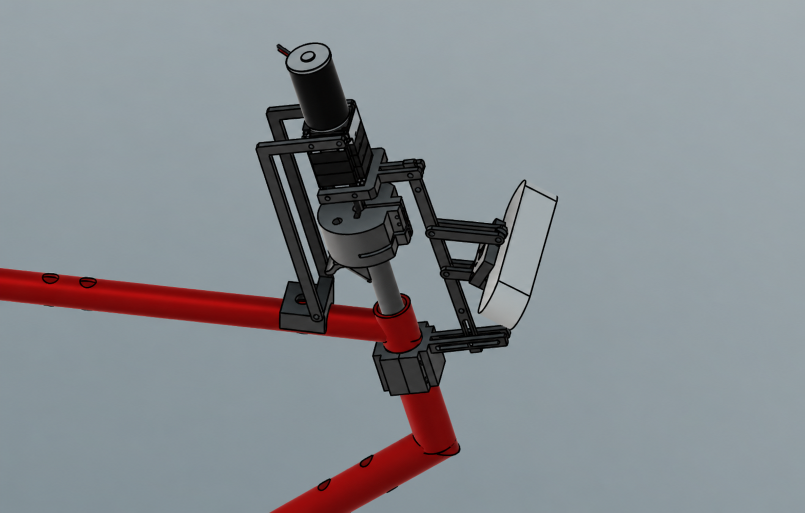
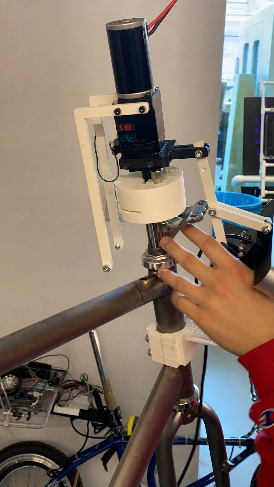
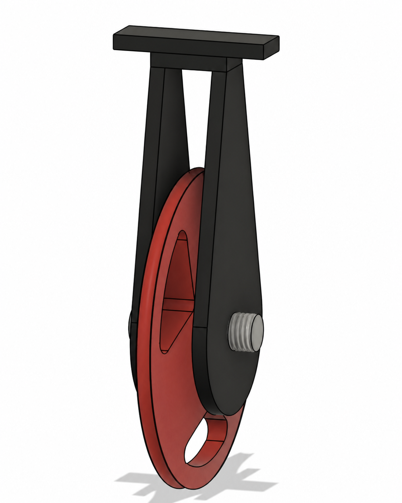
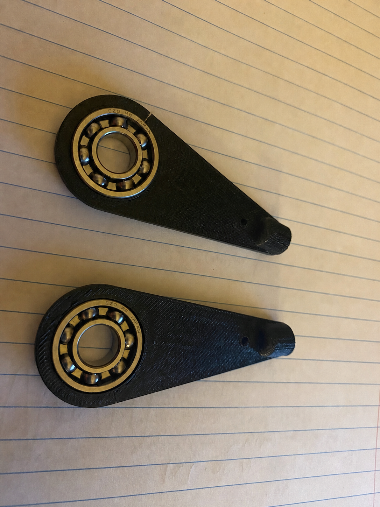
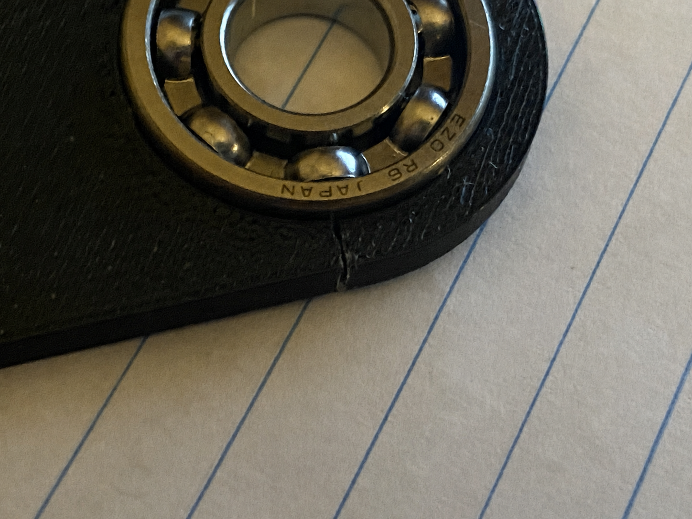
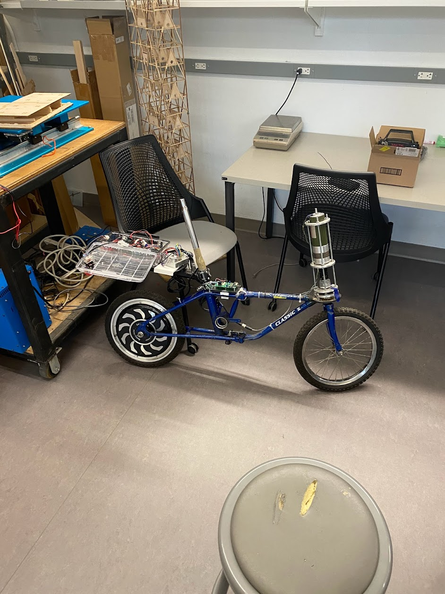
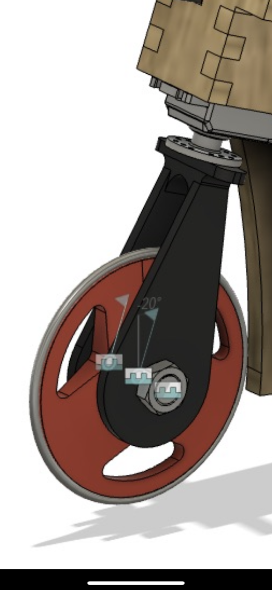
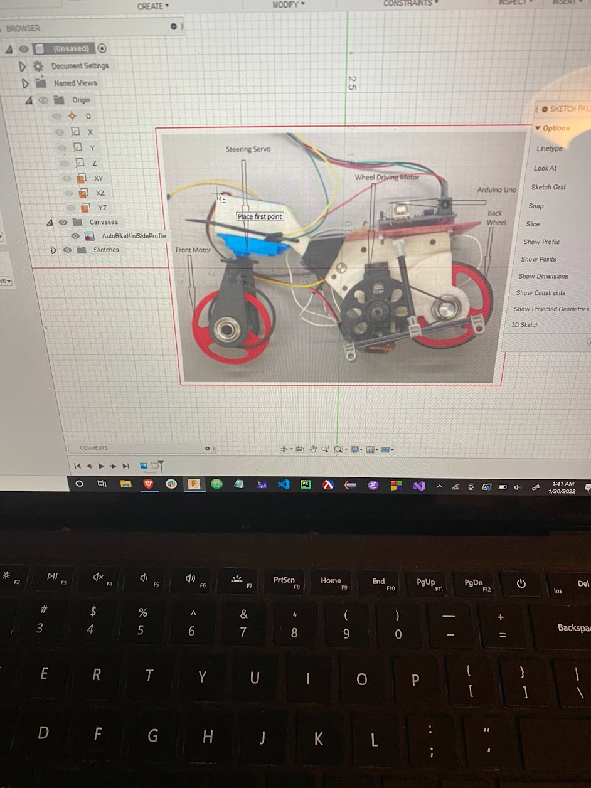

Cornell Autonomous Bicycle
Mechanical Engineering Leadership & Design
Overview
The Cornell Autonomous Bicycle project is a multi-disciplinary effort to design and build a self-balancing, autonomous bicycle. I've taken on leadership roles across mechanical design, team coordination, and technical implementation.
{kind=link}

An earlier prototype of the bike, predating my involvement with the project.
Internal Promotions
2021 - Mechanical Subteam Member
Joined CU AutoBike as a member of the mechanical subteam. Contributed to component design and fabrication as the team worked toward a self-balancing autonomous bicycle.
2022 - Mechanical Subteam Lead
Promoted to lead the mechanical subteam. Responsibilities included overseeing mechanical design, fabrication, and assembly of bike components, as well as coordinating the subteam's work and onboarding new members.
2023 - Full Team Lead
Promoted to lead the full project team. Responsibilities expanded to coordinating across mechanical, electrical, and software subteams to ensure integrated project success and overall team direction.
Main Bike Contributions
- Battery Bracket: Custom-designed and fabricated mounting system for secure, accessible battery placement
- Side-Panel Design: Protective enclosure for electronics and sensor systems
- Adjustable Camera Mount Design & Fabrication: Precision mount allowing flexible camera positioning for vision-based control systems
- Vibrational Mode Analysis & Informed Redesign: FEA and modal analysis to eliminate resonances and improve structural integrity
Front Assembly: CAD to Integration

{kind=link}

{kind=link}

{kind=link}

Component Prototyping & Design Iteration
{kind=link}

{kind=link}

Mini-Bike Project
- Review of Relevant Previous Projects: Analyzed prior iterations to identify design improvements
- Reverse Engineering Previous Projects: Documented and understood legacy designs for knowledge transfer
- Potential Applications of a Finished Product: Explored commercialization and real-world use cases for an autonomous mini-bicycle
{kind=link}

{kind=link}

{kind=link}

Quadrupedal Robot Project
- Low-Cost Cycloidal Drive Design: Engineered an affordable alternative to traditional gear drives for robot locomotion
- The Whitney: Quadrupedal Robot Leg: A modular, interchangeable leg concept for flexible quadrupedal robot configurations
Smaller Miscellaneous Projects
- 3D Printed Laptop Stickers: Custom-designed branded merchandise
- Bleach Stenciling Custom Branded Merch: Alternative fabrication method for team promotional items
Key Skills & Techniques
- Mechanical design and CAD (SOLIDWORKS, Fusion 360)
- Finite Element Analysis (FEA) and modal analysis
- Fabrication and prototyping
- Team leadership and project management
- Cross-disciplinary systems integration
- 3D printing and additive manufacturing
- Design for manufacturability (DFM)